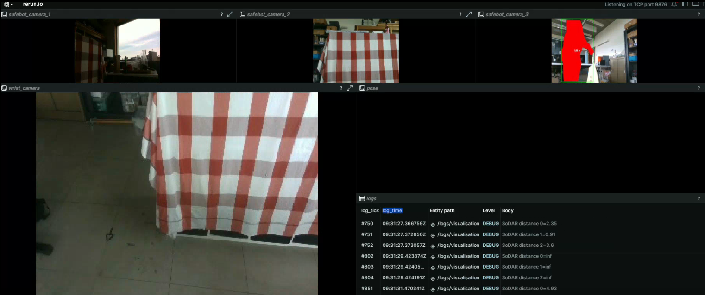

17 April 2025
Many roboticists have a love-hate relationship with ROS, and this is understandable. Its ecosystem is great, and you'll find libraries for just about anything you want to do. But at the same time, the installation process can be cumbersome and performance can be lacking with the default settings. Better yet, many robotics projects can get by with just a single process - using ROS just adds additional complexity.
At IDLab-AIRO, we have a custom codebase for robotics projects called airo-mono. This monorepo contains Python code for controlling UR cobots, KELO Robile platforms, reading camera data, algebra, and more. This approach has proven to do what we want: be easy to set up and use. airo-mono also powered the cloth unfolding competition at ICRA 2024 and is used for courses at Ghent University because of its ease of use.
Recently, we've finally published to PyPI for the first time, simplifying the installation process of our Robotics packages. Now, combined with uv, it's trivially easy to set up new robotics projects. Sure, there are some limitations: we only support hardware that we have in our lab (such as UR cobots, Zed cameras and Realsense cameras). But, I've recently set up a new project for an upcoming demo, and it's been incredibly easy to start.
This demo runs on a mobile platform which has a UR5e mounted on top. It uses airo-ipc, our custom Inter-Process Communication framework, to read data from 7 sensors (including 4 RGBD cameras) at high frequencies and communicate them with low latency over shared memory.
And, setting up the demo, was only a matter of:
uv sync to download and install dependencies (which is so fast that at first I thought it had failed)No need to install any external tools except for Python and uv, and our multi-process demo was already up and running in just a few minutes (most of which was spent downloading PyTorch wheels!) Here's a screenshot of an early test, showing rerun (which I highly recommend to anyone in the field).

It took us some time to create a solid IPC framework, and it's still a work in progress, but now that we have it, it's almost trivial to set up new robotics projects. Without ROS, and with near-instant set-up times.
There's never been a better time to try out airo-mono! Check it out on GitHub today!